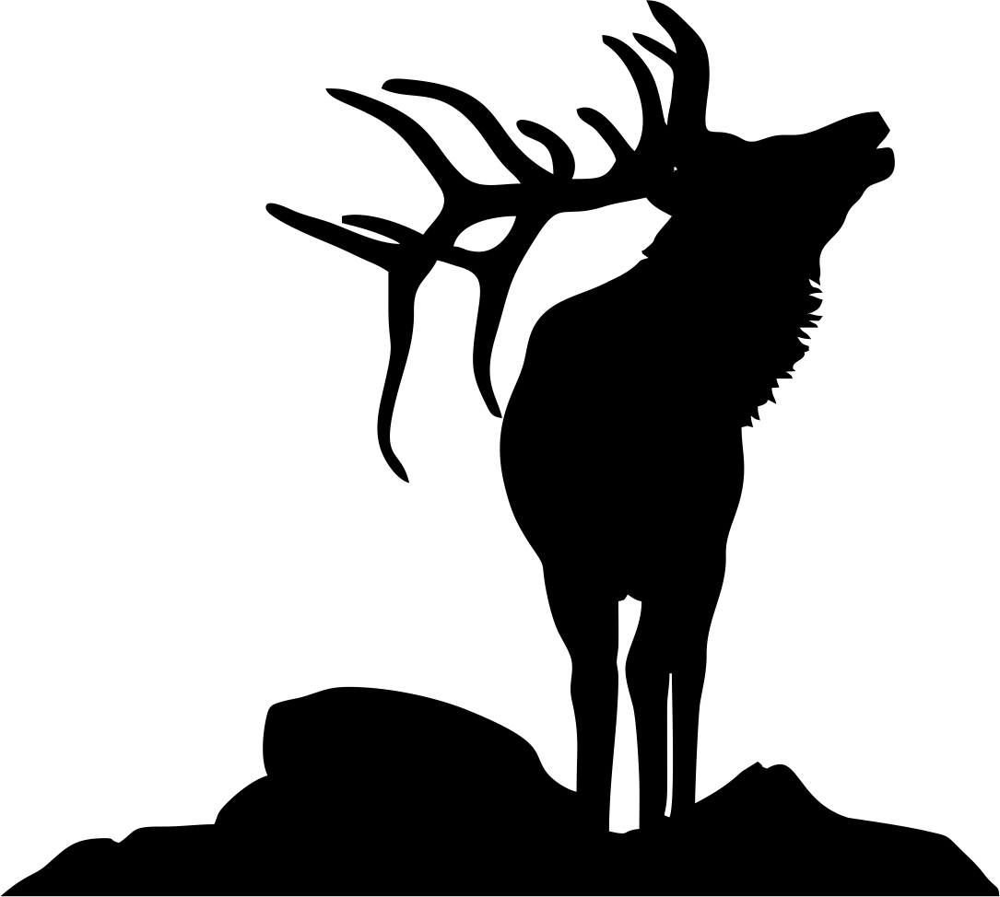

Analyzing Elk Movement Ecology Using GPS Collar Data
4/30/2021
Chapter 1 Introduction

My project will be looking at elk (Cervus elaphus) GPS collar data collected in southwestern Alberta, Canada. This particular study looked at elk behavior and compared it to their movement. I was able to download this data from MoveBank (a website for publicly available data) and will use this dataset as a surrogate for data I collect in the coming two years while completing my Master’s degree. I will be analyzing ungulate (elk, deer (Odocoileus spp), and livestock) movement through and usage of wildfire-burned areas so this telemetry data was very useful for practicing my analysis skills.
I plan to use the elk ID to ensure points are matched to each individual elk and their corresponding location data. This is captured in latitude/longitude. These points have a timestamp as well as the ambient temperature and elevation captured as the height above the ellipsoid recorded at the time of the location being taken.
I will focus on using the telemetry locations and other covariates to plot elk movement and answer questions about their ecology captured from the collars.
1.1 Project Goals
I will answer these few questions:
How does ambient temperature change across the study site and what temperatures did elk have to withstand in Southwestern Alberta?
How are elk using the landscape individually and in relation to other collared elk?
And, to expand upon the first question: Which locations are elk using more frequently?